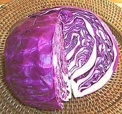

Red cabbages are very similar to the white except for the red coloration from Anthocyanin pigments. Color may vary from red to blue depending on acidity of the soil the cabbage grew in. This red pigment is a powerful antioxidant, the same one found in red wine. Red cabbage has been popular in Northern Europe because it keeps better than white cabbage so doesn't need to be made into sauerkraut to get through the winter. Some writers say red cabbage tastes exactly like white but that isn't quite true. The flavor is slightly less sweet and more complex.
More on Cabbage Greens.
 This cabbage was the original source of the Anthocyanin dye used to make Litmus Paper, familiar to anyone who's had high school chemistry. It turns blue when exposed to alkalis and red when exposed to acids. This is the source of the term "litmus test" used in politics.
cb_cabredz 070214 - www.clovegarden.com
©Andrew Grygus - agryg@clovegarden.com - All photos on this
page not otherwise attributed are © cg1.
Linking to and non-commercial use of this page permitted.